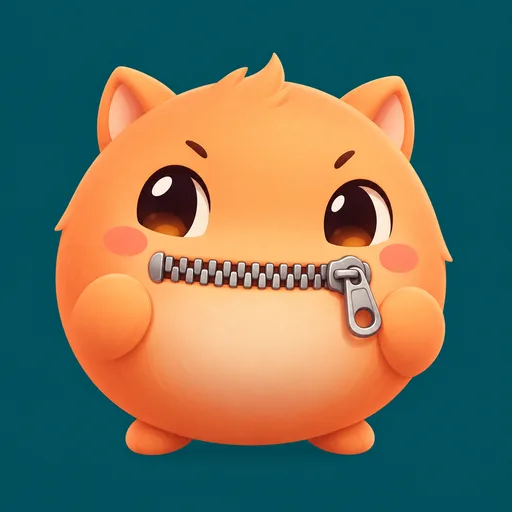
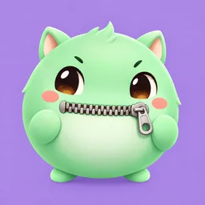

試合に合わせて、自動でミュート
タスク中は生きている人を静かに、会議になったらみんな話せるように。死んだ人どうしはタスク中も話せます。場面が変わったら、待たずにすぐ切り替えます。

DISCORD BOT / AMONG US / 無料
Among Us の試合に合わせて、Discord のボイスチャンネルを自動でミュート。
みんなはゲームに集中するだけ。
FEATURES
実際の動きのイメージ付き。デモは自動で再生されます。
タスク中は生きている人を静かに、会議になったらみんな話せるように。死んだ人どうしはタスク中も話せます。場面が変わったら、待たずにすぐ切り替えます。
つながっているか・いまの場面・ルームコードを 1 つのパネルに。自分のキャラは一覧から選ぶだけで紐付きます。
PC 版で遊ぶ人が「本家 Capture をつなぐ」を押すだけ。ふだん使っている AmongUsCapture がそのまま使えます。
ミュート専用の相棒「AutoMute 2」と手分けして送るので、大人数でも切り替えがもたつきにくくなっています。

タスク中に死んだ人も、会議が始まるまではほかの人と同じ扱い。生死や陣営をパネルに出すこともありません。
BOT がミュートした人を覚えていて、止めるときと次に動き出すときに必ず外します。困ったら全員分をすぐ外せます。
/unmute-all
自分のキャラを 1 回選べば、次からは自動。Discord とゲームで名前が同じなら、選ばなくても紐付きます。
/iam
試合を読むのは PC 版の誰か 1 人だけ。スマホで遊んでいる人も、同じようにミュートされます。
ゲームが読めないときは、ボタン代わりのコマンドで「タスク」「会議」を切り替えられます。
/manual
BOT は 24 時間動いています。遊ぶ日に、誰かの PC で BOT を起動しておく必要はありません。
動くのは BOT の持ち主が確認したサーバーだけ。接続のコードもサーバーごとに別です。
RULES
場面が変わったら、待たずにすぐ切り替えます（会議が終わって投票結果が出た瞬間に、生きている人はミュートされます）。
| 場面 | 生きている人 | 死んだ人 |
|---|---|---|
| ロビー | 話せる | 話せる |
| タスク中 | ミュート＋スピーカーミュート（何も聞こえない） | 話せる（死んだ人どうしで） |
| 会議中 | 話せる | ミュート（聞くだけ） |
| 試合終了 | 話せる | 話せる |
音楽 BOT などの BOT と、キャラに紐付いていない人（観戦している人）には触りません。
HOW TO INSTALL
このページの「導入する」を開きます。
※サーバーの「サーバー管理」の権限を持っている人が操作してください
導入先のサーバーを選び、「続行」→「認証」を押します。
BOT の持ち主が確認すると、使い方がサーバーに届きます。
※1 日たっても許可されないときは、BOT は自動で抜けます
ボイスチャンネルに入って打つだけ。状態パネルが出たら準備完了です。
BOT に要る権限は「チャンネルを見る」「メッセージを送信」「メンバーをミュート」「メンバーのスピーカーをミュート」だけです。管理者の権限は使いません。
COMMANDS
Discord の入力欄に「/」と打つと候補が出ます。覚えなくて大丈夫です。
/automute-startいる VC をミュートの対象にする（1 回やれば覚える）/statusいまの状態を見る/panel状態パネルを出し直す/reader読み取りアプリ・Capture の接続先を出す（本人にだけ）/iam自分のキャラ（ゲーム内の名前）を選ぶ/linkほかの人とゲーム内の名前を紐付ける/unlink紐付けを外す/pause /resume一時停止・再開/manual手動モード（ゲームが読めないとき）/unmute-allBOT が付けたミュートを全員分すぐ外すFAQ
試合の様子を読むのに、PC 版で遊ぶ人が 1 人必要です。その人がいれば、スマホの人も一緒にミュートされます。
同じ試合では、どちらか一方を使ってください。AmongUsCapture がつながるのは 1 つだけです。本家に戻すときは、本家の /new のリンクから Capture を開き直します。
かかりません。個人が運営している無料の BOT です。
サーバーごとに、使う VC・紐付け（Discord の人とゲーム内の名前）・ミュートした人の記録だけです。メッセージの中身は読みません。
サーバー設定の「連携サービス」→ AutoMute で、コマンドごとに使える役職やチャンネルを決められます（Discord の標準の機能）。
/unmute-all で全員分をすぐ外せます。止めておきたいときは /pause、また使うときは /resume。